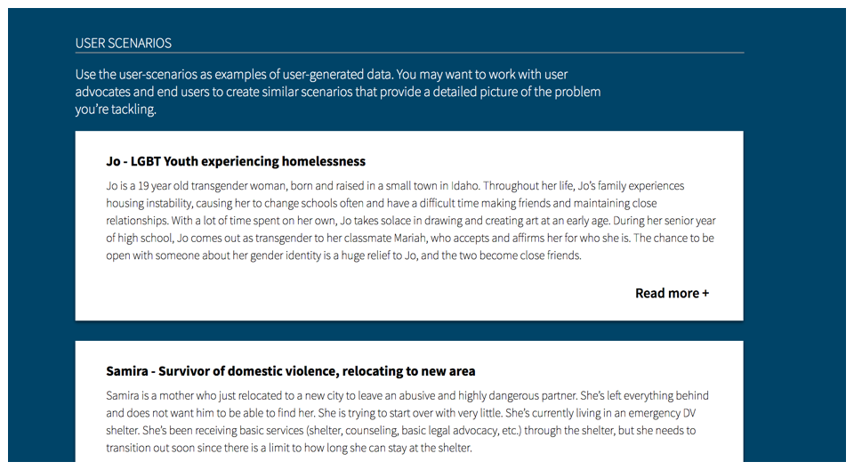
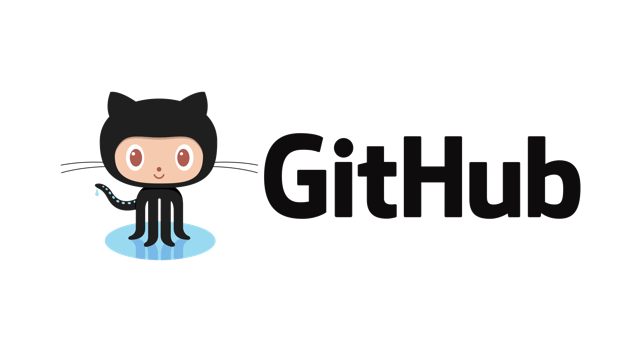

This playbook documents the process that The Opportunity Project team at the US Department of Commerce and other federal agencies have used to facilitate collaborative, user-centered technology development sprints. Anyone interested in transforming federal data into digital tools for the American people can adopt this process, adapt it for your own sprint, and share your feedback to help improve it.
The Opportunity Project process has been adapted by civic tech organizations, coding bootcamps, and more. We hope that teachers, community organizations, state local and other government leaders will use it and share feedback to help improve it.
Step 01
Choose a Problem to Solve
The Opportunity Project aims to solve real-world problems facing individuals and communities. The first step in the process is to identify a problem that your team will work to solve with a data and technology solution. In order to make a solution that really improves lives, it’s important to start by working with people experiencing that problem directly to be sure that you’re really addressing felt needs. Then find a data set with information that could help to solve that problem, and start building your tool.
Connect with community groups, local leaders, federal agencies, or non-profits who are mission-driven and close to the ground to identify a meaningful challenge to focus on.
Identify an opportunity for federal or local data to make an impact, for example a problem where making data more accessible would solve a problem.
Remember to consult with stakeholders and future users of your tool before you build anything. This is a critical step in building a useful tool, but one that is easy to overlook. More information on conducting user research in Step 3.
Resources
Problem Statements Defined by Federal Agencies
The problem statements can serve as a starting point for your team. Work with local experts and user advocates to narrow or revise the scope for your own project.

Detailed User Scenarios
The user scenarios were written by user advocates and people with lived experiences, and they provide examples of real-world challenges and the stories behind them from the end user’s perspective.
Step 02
Form a Team
Collaboration is an essential part of the Opportunity Project process. Recruit a team with diverse skills and perspectives so that you can build the best solution for your problem statement. Bring in community leaders, service providers, or people with lived experience who can act as User Advocates for your end-users; government agencies who can provide guidance with data sets; and a cross-functional technology team with designers and developers to build a high quality digital tool.
Include a tech team: data scientists, developers, designers, business thinkers, or anyone else who could help to build the solution.
Reach out to government policy and data experts who may be able to help shape your problem statement or design of your product.
Include User Advocates who work directly on issues related to your challenge, and who work closely with your end-users -- or even better, people who experience the problem directly.
Identify team members who can lead user research, like people who have experience with user-centered design. Everyone should try to ensure the project stays focused on the user and their needs.
Tip: think early about who will maintain the tool once it’s built and who will make sure it gets into the hands of end-users. You may want to identify someone on the team who is responsible for determining how to make your solution sustainable.
Resources
Commerce Data Academy
Build skills on your team with these previous courses from the US Department of Commerce’s Commerce Data Academy on topics including User Experience Design, Qualitative User Research, Git and GitHub, Java and more.
Code for America Brigade
Look for additional tech talent within a local tech Meetup, Code for America Brigade, or other civic tech organization if there is one in your community.
Slack Community
Join our online Slack community to recruit collaborators and chat with others. Start a conversation by location, issue, or anything else!
Step 03
Conduct User Research
Collaborate directly with end users throughout the entire process to identify user needs, agree on a use case for your product that will best serve a real problem for the target audience, and ask for ongoing user feedback while you’re developing the product. By building alongside your end-users, you can create a product that will better serve their needs. At the beginning of the process, try to answer questions like: How do people experience the problem? Do they have any tools to help them currently? What are the gaps that exist in their current tools? What tools do users wish they had?
Conduct interviews with user advocates, or work with user advocates to set up conversations with your end-users to better learn about their needs, constraints, and preferences for digital tools. If you’re working with a user advocate that does community outreach, learn how they connect with their audience and any challenges they run into.
Also consider other methods, like facilitating a design workshop at the start of the sprint to bring user advocates into one room to brainstorm together.
Create a detailed use-case to narrow down a broad problem statement to a specific user-driven issue to tackle.
Resources
Empathy Isn’t Enough
Read this article written by a past Opportunity Project participant to learn more about the user research workshop, user interviews, and other methods they used to build a useful tool for youth experiencing homelessness.
User Centered Design Training
Watch this user-centered design training that Exygy created for Opportunity Project participants.
How to Conduct User Interviews
This article provides tips on how to create interview questions and conduct user interviews, and includes resources you can use for interviewing.
IDEO Design Methods
Use these IDEO Design Methods to narrow down your problem statement.
User Scenarios
Use the user-scenarios as examples of user-generated data. You may want to work with user advocates and end users to create similar scenarios that provide a detailed picture of the problem you’re tackling.
Jo - LGBT Youth experiencing homelessness
Jo is a 19 year old transgender woman, born and raised in a small town in Idaho. Throughout her life, Jo’s family experiences housing instability, causing her to change schools often and have a difficult time making friends and maintaining close relationships. With a lot of time spent on her own, Jo takes solace in drawing and creating art at an early age. During her senior year of high school, Jo comes out as transgender to her classmate Mariah, who accepts and affirms her for who she is. The chance to be open with someone about her gender identity is a huge relief to Jo, and the two become close friends.
After graduation, Mariah suggests they move to Cincinnati together, where they can stay with her cousin for a small fee. Cincinnati offers more transition-related resources for Jo, and it’s much easier to get around in the city (Jo doesn’t have a car). Also, Mariah’s cousin owns a hair salon and says they can help out from time to time to make a bit of money. The two decide to make the move.
After a few weeks of doing temp work and trying to make ends meet in the city, Jo lands a job interview for a receptionist position at a local arts magazine. However, the night before the interview, Mariah gets into a bad fight with her cousin, who tells Jo and Mariah that they are no longer welcome in her home. Jo and Mariah call the few people they’ve met in the city to see if they can crash on someone’s couch, but no one is able to offer them a place to stay. One person, however, gives them the address to a local youth shelter.
While going through intake at the shelter, Jo is informed that shelter policy requires she be housed in the men’s wing because her government I.D. says “male,” while Mariah, who is cisgender, is placed in the women’s wing. Jo asks if an exception can be made so she can be placed in the women’s wing with Mariah. The caseworker explains that she wants to help, but she is limited by strict institutional policies. If Jo wants to stay at the shelter, she needs to stay in the men’s wing.
Separated from her friend, and feeling unsafe due to the sex-segregated housing policy, Jo decides she’s going to find another place to stay. She explains to the caseworker that, in addition to housing, she also needs to prepare for an important interview in the morning. Jo still needs to do some more research on the company, find a safe place to get changed before the interview, and figure out how to get there. She doesn’t have a lot of cash, she’s unfamiliar with the city, and her phone battery is dying. Also, Jo is low on mobile data, so she’s unable to access information without WiFi.
If Jo had an app designed for her needs…
The caseworker suggests Jo download the True Connect mobile app, which will connect her to transgender-affirming housing and other resources that can help her prepare for the interview. Jo uses the shelter WiFi to download the app and finds a safe place to stay for the night.
The next morning, Jo uses True Connect to locate an affordable healthy corner store to get some breakfast, a charging station to finish charging her phone, and a free wifi hotspot so she can do a bit more research on the magazine company before her interview. Through the app, she locates a gender-neutral restroom near the magazine company where she can get ready and a free shuttle bus that will take her close to where she needs to go. Jo notices the app also includes a list of transgender-affirming health care providers, which she plans to explore later. Before the interview, Jo uses True Connect to find a public park near the magazine company where she can decompress and relax.
Thanks to the True Colors Fund for creating this scenario highlighting the True Connect app concept.
Samira - Survivor of domestic violence, relocating to new area
Samira is a mother who just relocated to a new city to leave an abusive and highly dangerous partner. She’s left everything behind and does not want him to be able to find her. She is trying to start over with very little. She’s currently living in an emergency DV shelter. She’s been receiving basic services (shelter, counseling, basic legal advocacy, etc.) through the shelter, but she needs to transition out soon since there is a limit to how long she can stay at the shelter.
Samira needs to find affordable housing and a job. She’s doesn’t have a lot of work experience, but she’s temped in offices before. She doesn’t have a car, so she needs a job that’s either walking distance or that she can get to with public transportation. Although she has custody of her child, there are still ongoing court hearings, and so she needs to be able to travel to the court house for hearings.
She needs to find a home for her and her daughter. She’d like a place that’s safe but close enough to her job and close to her daughter’s elementary school. She will also need to find affordable afterschool care for her daughter while she is at work. Also, her daughter has type 1 diabetes and needs to regularly visit the doctor, so she wants to know where the nearest free clinic or emergency clinic is in case there are complications.
Because she’s in a new area and doesn’t know anyone, except the people at the shelter, she needs to know where everything is, including grocery stores, laundromats, post office, etc. It would be great to know where the nearest police or sheriff’s department is so she can take her protection order to them to have on file. She also is interested in finding a faith-based or culturally-specific community she might be able to connect to in order to rebuild her support system and meet people.
See more user scenarios
Step 04
Explore Data
Once you have defined the problem from the end user’s perspective, dig into data to find information that could help to solve the problem. To help you find and use federal and local government data, we pulled together some of the best and most relevant open data sets about economic opportunity, such as job locations, transportation, affordable housing, health care facilities, and schools.
Determine what data could address the end user needs you identified in your user research. For example, if your user research showed you that youth experiencing homelessness need to access information on shelters and job opportunities through wifi on their phones, you may want to build a web app and use local government data on library locations, public wifi hotspots, and shelters.
Identify key characteristics of the data sets you need, such as the level of granularity (e.g., you may need neighborhood or address level information, rather than city level, for the data to be useful) or frequency. For example, when building a product to help individuals search for jobs, very frequently updated data would be the most useful.
Connect with a federal or local government agency who can act as a data steward for your project. Many data sets are owned by agencies who understand the data in detail and will be able to answer relevant questions.
Check out the starting points below to find your data sets.
Pro tip for techies: Cut down on data discovery time by using existing tools, wrappers, and tutorials. Check out the list provided in the resources list below. Have questions or feedback about the data? Let us know on GitHub.
Data Inventory
Browse federal and local data sets with neighborhood-level information on economic opportunities and local resources, and download a metadata file with more information on the year and format of the data, as well as a short, plain-language description of the data set’s content.
Federal Data: Find information for the whole nation on poverty, employment, school equity, transit safety, and much more.
data data data
Local Data: Find neighborhood level information on things like homelessness, parks, crime, and healthy corner stores
data data data
data data data
See more local data sets
Data Resources
Data.gov
Search nearly 200,000 data sets from federal agencies. Check out the Opportunity Project collection of data sets at data.gov/opportunity.
The Opportunity Project Slack
The Opportunity Project commuity on Slack is a great place to ask questions about finding, accessing, or using data sets.
Forums, Tutorials, and Other Tools
Data.world
Data.world created compilation of data sets for teams in The Opportunity Project with space to share feedback on data and collaborate with others using the data. This makes it easy for educators, data scientists, everyday citizens, and students, to discuss, analyze, query, visualize, and easily share their findings.
CitySDK
The Census Bureau created a series of tools that make it easier to combine and use government data. You can find an Opportunity Project module on the CitySDK website.
Commerce Data Usability Project
The Commerce Data Service has built a number of wrappers and tutorials that make Commerce datasets including our national weather data, Census data, patent data, and others, more easy to use.
Kaggle
Kaggle is a community of 600K data scientists that have posted a number of USG datasets and great tutorials for new data scientists.
Stack Overflow
Stack Overflow is also a great tool where many members of the public ask questions relevant to federal and local data sets.
Stack Exchange
Stack Exchange has a vibrant open data community, which is a great place to come with questions and find early answers to your data and developer-related questions.
Step 05
Design and Build a Product
Once you identify a problem to tackle, the end users your tool will serve, and the data you will use, start building! Work collaboratively to build a digital product, including as many voices as possible and seeking feedback as you design and build. Build iteratively, showcasing early versions and revising your design plans based on feedback. Remember that you don’t have to build the perfect or “final” solution in 12 weeks! During this phase, we recommend the whole group communicate frequently and come together remotely or in person every 2-3 weeks to demo their works in progress, ask questions, and share feedback.
Build according to the user research. Use the data you found during data exploration.
Share the concepts, wireframes, and prototypes early and often. Revise your design and plans based on the feedback you receive.
Conduct user testing or feedback sessions to improve the product and ensure that the people who need it are aware it exists.
Develop a plan for tracking success of your tool, such as tracking number of sessions, users, or downloads via tools such as Google.
Identify the path for adoption, or how you will connect end users with your product, once the tool is released. What will your team need to build into the product to ensure lots of people can use it? What types of organizations do you need to work with to help connect your tool with the people it’s designed to serve?
Think about how you will maintain the tool over time, or what partners you need to help you sustain and continuously update and improve the tool.
Timeline
If you’re interested in replicating the Opportunity Project sprint process, here is a sample week-by-week timeline. Feel free to adjust your project plan and milestones based on what works for your team.
Week 1
Choose a general problem statement to focus on.
Week 2
Connect with others to form a diverse team. Establish ways to communicate -- such a listserv, online slack channel, or in-person meetups – so that everyone can collaborate and share progress.
Week 3
Conduct user research and identify a user-driven use case for your product.
Week 4
Identify information that could help to solve the problems you identified in your user research, and then find federal and local data sets with the information you need.
Week 5
Start to sketch out a product. Share sketches, wireframes or a concept pitch to get early feedback from end users, subject matter experts, government employees, and others. Early demos of Minimum Viable Products are part of the lean start-up methodology and lead to faster value delivered to users.
Week 6-7
Continue building based on feedback received from your demo, and continue to explore data and seek ongoing input from user advocates and end users.
Week 8
Do another demo and share a more mature and improved version of the product you’re building. Seek more feedback, particularly from end users of the tool.
Week 9-10
Keep building, and hold interactive user testing sessions. Plan how you will share the final product with end users and other stakeholders.
Week 11-12
Get everyone involved in the process together to launch the final prototypes or MVPs.
Beyond the sprint: Continue to improve the tools, share the product with the target end users, and measure your impact.
Resources
Slack
Identify community leaders and other collaborators on Slack to provide feedback on work in progress.

Github
Software developers can use Github to share code, ask questions, post new suggested data sets, share feedback on data, and more. Github is also an invaluable tool for logging issues or bug fixes that need to be addressed.
Step 06
Share with End Users & Stakeholders
At the end of your sprint, or when you’re ready to launch a prototype or “MVP” of your product, get the word out and make sure people know about the product you built so that they can use it! Share your product with everyone who will be interested. Stakeholders might include:
o People who you designed the tool for - the end users
o Organizations who could help share or scale the tool
o Other teams in The Opportunity Project community
o Local government or other organizations that collect and maintain the data you used
There are many ways to spread the world, like social media, in person events, outreach through user advocates, and more. The Opportunity Project launches multiple tools at once, through coordinated events that incorporate in-person, online, and social media channels. Coordinating with user advocates is a great way to share your product with the intended end users through their outreach platforms. For example, if you worked with a veteran service provider to build a tool for veterans, you may be able to share your tool directly through their online presence or organization.
Consider hosting an event to showcase your product
Use press and social media to spread the word! Use #OpportunityProject.
Create a plan with user advocates to share your product with end-users in the community
Share your code! We highly encourage you to make your projects open source and free for use by the public. A local tool in Baltimore, MA can be used in Austin, TX just by using different data sources!
Resources
Launch event
Watch the video from the launch event in March 2016 of the Opportunity Project.
Demo Day 2016
Watch the video from our rollout event and demo in October 2016.
Step 07
Keep Improving, Share Metrics & Feedback
Your launch is just the beginning! After you launch your product and work with user advocates and other groups to deploy it to the target end users, keep building and seeking ongoing feedback to continuously improve your product. After the sprint, be sure you have a plan for how this product will live on after it is built. Will you maintain it? Do you need another organization to help sustain it? Will you hand off the code to another group for sustainability? Look to user advocates and local organizations who may be helpful partners in sustaining the tool.
Make use of the tools you put in place to track impact, like Google Analytics, to measure success of the tool. Gather numbers on users, downloads, or other metrics, and stories from users on how they are using the product. Share what you learn with The Opportunity Project community on Slack.
Share feedback on the data you used, or data you needed but couldn’t find - this is critical to improving data quality and accessibility for you and other data consumers! And please help us to improve this toolkit by sharing feedback on using this toolkit.
Keep building and improving.
Ask technical team members for a commitment to routine maintenance and improvements to the product. Talk to user advocates and other stakeholders about organizations that might want to help with sustainability.
Measure your impact: Collect information on things like page views and users through Google Analytics, outcomes and how your tool is helping individuals and communities.
Share information on your experience using this toolkit with the whole Opportunity Project community on Slack. Use the #datafeedback channel to share feedback on things like data availability, access, quality, or formats with data stewards.


 Data.gov
Data.gov